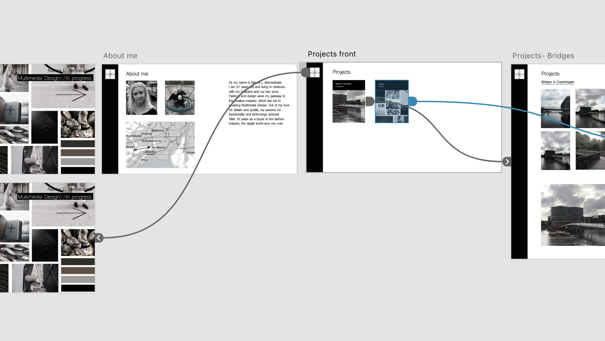
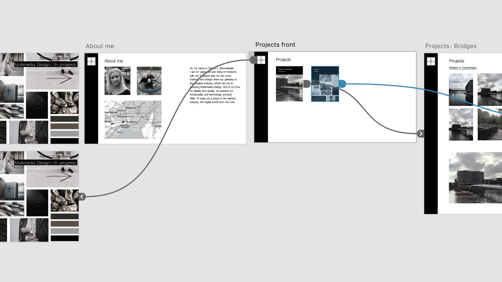

 As a schoolproject, we were asked to make our portfolio as a website protptype in Adobe XD.
See full project descriptionAdobe XD, Photoshop
I started by drawing a sketch on paper, trying to make the website design as i wanted it to appear. Afterwards I made a collage in Photoshop, to set the visual direction for my portfolio project. I decided that I want a logo on the top left side, as a home- and menu-button, but I am still working on this. So, for now the button comes without logo. Then I started working on the navigation, to make sure that the site would be easy to figure out. This ended up in a functional XD prototype.
See the result